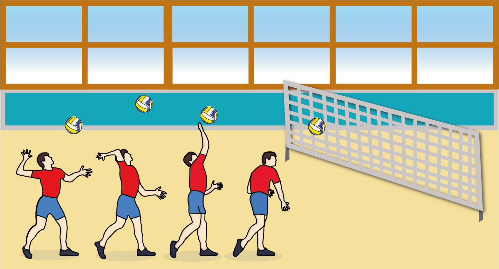
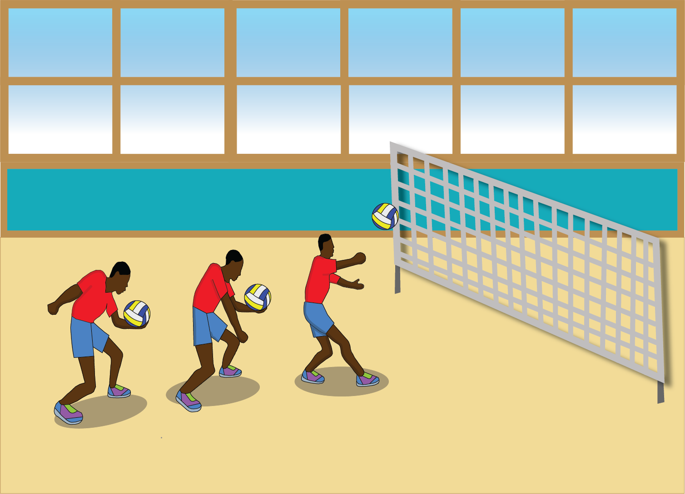
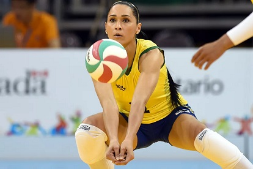
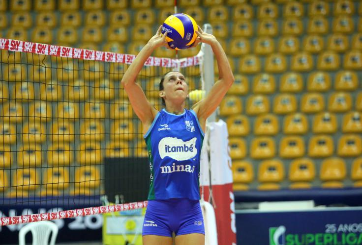
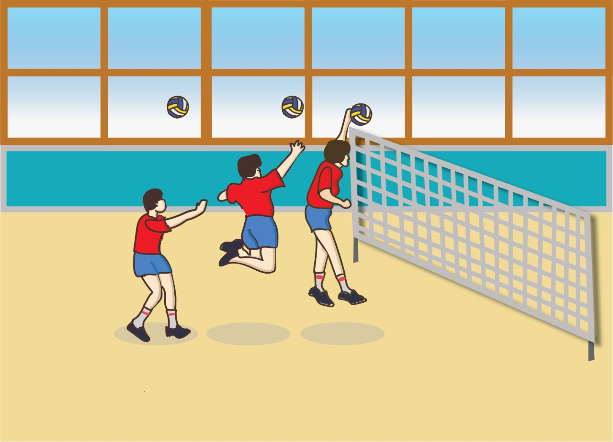
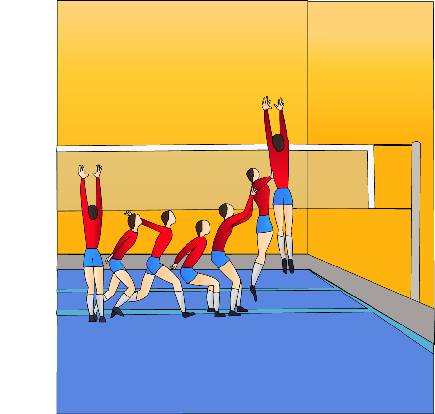
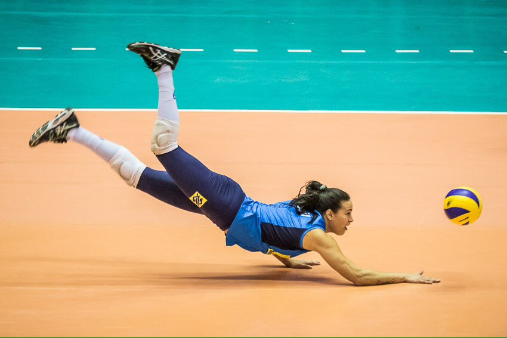

Um jogador posta- se atrás da linha de fundo de sua quadra, estende o braço e acerta a bola, de forma a fazê-la atravessar o espaço aéreo acima da rede delimitado pelas antenas e aterrissar na quadra adversária.
 o passe é o primeiro contato com a bola por parte do time que não está sacando e consiste, em última análise, em tentativa de evitar que a bola toque a sua quadra, o que permitiria que o adversário marcasse um ponto.
O levantamento no Voleibol consiste essencialmente em preparar as ações do ataque, onde prevalece à cooperação entre passadores–levantador e levantador-atacantes, acompanhada pela oposição direta em relação ao bloqueio adversário e, eventualmente, com a defesa adversária no caso de um ataque do levantador
o ataque é feito saltando e batendo na bola com a palma da mão utilizando a maior força possível. O objetivo deste fundamento é fazer a bola aterrissar na quadra adversária, conquistando deste modo o ponto em disputa.
O bloqueio é uma ação técnico-tática defensiva e ao mesmo tempo ofensiva do voleibol que consiste em interceptar ou amortecer o ataque da equipe adversária
A defesa no Voleibol pode ser definida como a ação de recuperar as bolas vindas do ataque adversário que ultrapassam o bloqueio e criar condições para o contra-ataque, exigindo concentração, coragem, agilidade e determinam o espirito de luta da equipe.
 topo da pagina